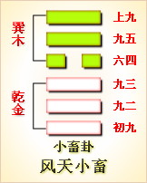

周易第九卦 小畜 风天小畜 巽上乾下
小畜：亨。密云不雨，自我西郊。
彖曰：小畜;柔得位，而上下应之，曰小畜。健而巽，刚中而志行，乃亨。密云不雨，尚往也。自我西郊，施未行也。
象曰：风行天上，小畜;君子以懿文德。
初九：复自道，何其咎，吉。象曰：复自道， 其义吉也。
九二：牵复，吉。象曰：牵复在中，亦不自失也。
九三：舆说辐，夫妻反目。象曰：夫 妻反目，不能正室也。
六四：有孚，血去惕出，无咎。象曰：有孚惕出，上合志也。
九五：有孚挛如，富以其邻。象曰：有孚挛如，不独富也。
上九：既雨既处，尚德载，妇贞厉。月几望，君子征凶。象曰：既雨既处，德积载也。君子征凶，有所疑也。
小畜卦卦象，风天小畜卦的象征意义
小畜卦为易经64卦第九卦，风天小畜卦有哪些具体的象征意义呢?
小畜卦，这个卦是异卦相叠，下卦为乾，上卦为巽。乾为天，巽为风。喻风调雨顺，谷物滋长，故卦名小畜。畜的本义是田中作物茂聚，引申为积畜，小畜为一点点积畜。因为力量有限，还没有达到大畜的程度，所以须待发展到一定程度，才可大有作为。
小畜卦位于比卦之后，《序卦》之中这样解释道：“比必有所畜，故受之以小畜。”比合在一起一定会有所积蓄，所以接着是小畜卦。
《象》曰：风行天上，“小畜”;君子以懿文德。
《象》中指出：小畜卦的卦象是乾(天)下巽(风)上，是风飘行天上的表象。风在天上吹，密云不雨，气候不好不坏，收成一般，所以只能“小有积蓄”;君子面对这种情况，于是修养美好的品德，用心做好文章等待发达的时
小畜，象征着积蓄。不过，这里的积蓄并不是指一般的积蓄财富，而是积蓄力量。小畜指密云无雨之象，蓄养实力之意，属于下下卦。《象》中这样来断此卦：苗逢旱天尽焦梢，水想云浓雨不浇，农人仰面长吁气，是从款来莫心高。
此卦的卦名为小畜。甲骨文的“畜” 字是一个会意字，表示的是牛鼻被牵引 并出气的样子。说明是已被人类驯服豢 养的家畜。《左传•昭公二十三年》疏：
“家养谓之畜，野生谓之兽。”所以畜的本 义是指驯养家畜。前面的比卦是一个君 臣比亲的社会，自然民众的生活水平会 有所提高。人们生活水平提高了，私有财 产便会增多，所以家家户户开始饲养家 畜，当然也有的人家要畜养奴仆。在奴隶 社会，奴隶与家畜是没有太大区别的。所以畜便也有积蓄的意思。《周易》中有小畜卦和大畜卦之分，其实就是积蓄少与多的 区别。
从卦象上分析，小畜 卦上卦为巽为风为鸡，下 卦为乾为天为马，所以说 风行天上、畜养鸡马便是 小畜卦的卦象。风行天上，则表示政令迅速普及全国;畜养鸡马，则表明人民的生活水平有所提高，财富有小小 的积蓄。
象辞中说“君子以懿文德”，荀爽认为指的是周文王在西岐时还没有做天子，不 能把恩泽、政令施于民，所以只能美化自己的道德。事实上，这一卦应当描述的是周 公摄政的事。周公称王代替年幼的成王治理天下，而其依然自认为是臣民，所以以柔 顺之德居于六四之位，周公的东征，正是为周公之治的兴盛打下了基础，所以周公摄 政东征后，使西周的经济出现了小小的积蓄。
关键词：周易,小畜卦,风天小畜,巽上乾下
小畜卦：吉利。在我西边郊野上空阴云密布，但雨却没有落下来。
初九：沿田问道路返回，没有什么灾祸。吉利。
九二：拉回来。吉利。
九三：车子坏了一个轮子，夫妻俩互相埋怨。
六四：抓到俘虏，免除了担忧，还是要注意提防，不会有灾祸。
九五：抓到俘虏后把他们紧紧捆住，与邻村邻族共同分享快乐。
上九：雨已降下，又已停止，还可以栽种作物。女子占问得到凶兆。月亮已是接近十五时的满月，君子离家出行，贞兆凶险。
(1)小畜是本卦标题。畜的意思是田地里谷物滋生，草木茂盛。卦象是表 示天的“乾”和表示风的“粪”相叠加，卦辞、爻辞主要讲农业生活。本卦标题是根据内容加的。
(2)我：王公贵族的自称。
(3)复：返回。道：田间的 道路。
(4)牵复：拉回来。
(5)舆：车。说：用作“脱”。辐：车轮上的辐条，这里指车轮。
(6)血：用作“恤”，意思是担忧。惕：提防。
(7)挛如：捆绑得很紧的样子。
(8)富：用作“辐”。
(9)既：已经。处：停止。
(10)德：“得”的意思。载：用作“栽”。尚德载：还可以栽种作物。
(11)几：接近。望：农历每个月十五日月圆的时候，也叫做月望。